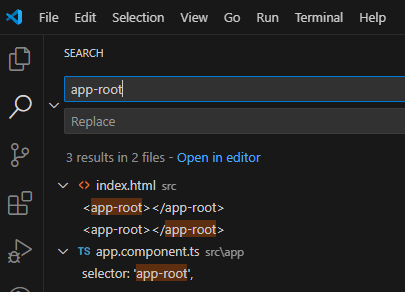
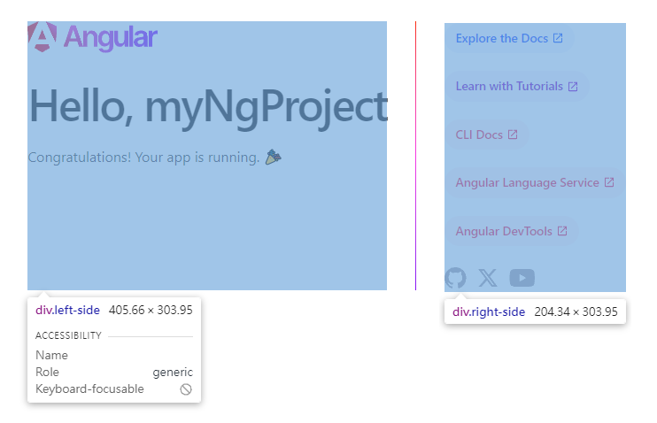
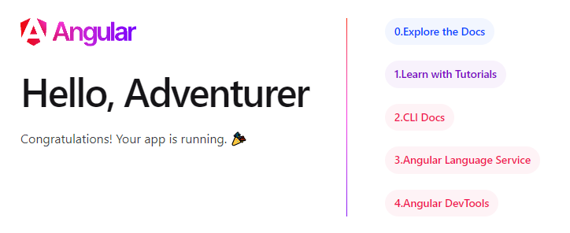

前言 上回我們已經透過angular cli建立了一個初始專案，這次來說說這個專案裡面的東東。
一、簡介 一般常見的網頁都有個入口點/進入點，一般常見的預設是index.html ，本專案的入口點是myNgProject\src\index.html ，裡面的內容如下:
1 2 3 4 5 6 7 8 9 10 11 12 13 <!doctype html > <html lang ="en" > <head > <meta charset ="utf-8" > <title > MyNgProject</title > <base href ="/" > <meta name ="viewport" content ="width=device-width, initial-scale=1" > <link rel ="icon" type ="image/x-icon" href ="favicon.ico" > </head > <body > <app-root > </app-root > </body > </html >
其中最重要的就是<app-root></app-root>，他看起來像是自訂的tag ，實際上是一個Angular元件 ，對應到的是Angular元件 的selector ，打開VSCODE的搜尋視窗，可以搜尋到selector: 'app-root'

他其實是在app.component.ts的AppComponent這個名稱的**元件(component)**裡面所定義的，如下
1 2 3 4 5 6 7 8 9 10 11 12 13 14 import { Component } from '@angular/core' ;import { RouterOutlet } from '@angular/router' ;@Component ({ selector : 'app-root' , standalone : true , imports : [RouterOutlet ], templateUrl : './app.component.html' , styleUrl : './app.component.scss' }) export class AppComponent { title = 'myNgProject' ; }
打開程式我們可以看到除了selector還有standaloneimportstemplateUrlstyleUrl
我們先看templateUrl是什麼，他基本上就是一個html 格式檔案app.component.html與本檔案app.component.ts的相對路徑，他可以說是代表了AppComponent這個元件的視圖、畫面，而app.component.ts負責的是這個元件 的邏輯 部分，styleUrl則是scss 的部分，但我比較習慣的方式是透過統一的css系統例如bootstrap,primeflex來處理，而不是每個元件寫一個scss 檔案。
檔名
用途
app.component.html
視圖/畫面
app.component.ts
邏輯
app.component.scss
scss
app.component.spec.ts
測試用
app.component.html
1 2 3 4 5 6 7 8 9 10 11 12 13 <style > :host { --bright-blue : oklch (51.01% 0.274 263.83 ); --electric-violet : oklch (53.18% 0.28 296.97 ); --french-violet : oklch (47.66% 0.246 305.88 ); --vivid-pink : oklch (69.02% 0.277 332.77 ); --hot-red : oklch (61.42% 0.238 15.34 ); --orange-red : oklch (63.32% 0.24 31.68 ); --gray-900 : oklch (19.37% 0.006 300.98 ); --gray-700 : oklch (36.98% 0.014 302.71 ); --gray-400 : oklch (70.9% 0.015 304.04 ); ........略
我們可以看到上面有一大段嵌入 embed 的style在<style></style>裡面，一般會寫在app.component.scss裡面，
1 2 3 4 5 ? Which stylesheet format would you like to use? CSS [ https://developer.mozilla.org/docs/Web/CSS ] > Sass (SCSS) [ https://sass-lang.com/documentation/syntax#scss ] Sass (Indented) [ https://sass-lang.com/documentation/syntax#the-indented-syntax ] Less [ http://lesscss.org ]
我們來動手把<style></style>裡面的東西移動到app.component.scss裡面，結果應該不會有任何差別，只是方便之後如果要維護css的話，有個獨立的檔案，比較乾淨，也避免動到不相關的部分。
1 2 3 4 5 6 7 8 9 <main class ="main" > <div class ="content" > <div class ="left-side" > <svg > ...內容物是Angular的logo </svg > <h1 > Hello, {{ title }}</h1 > <p > Congratulations! Your app is running. 🎉</p > </div >

畫面上我們看到的Hello, myNgProject在html 上對應到的是Hello, {{ title }}，在Angular的html 之中，只要用兩個大括號{{ }}包起來的，中間的就是變數，來源於ts 檔案裡面的
這段的作用是宣告title，並且賦值為'myNgProject'這個字串 ，如果你嘗試修改title = 'myNgProject'右邊的文字，畫面上的文字也會跟著產生變化。
1 2 3 4 5 6 7 8 9 10 11 12 13 14 15 16 17 18 19 20 21 22 23 24 25 26 27 28 29 <div class="pill-group"> @for (item of [ { title: 'Explore the Docs', link: 'https://angular.dev' }, { title: 'Learn with Tutorials', link: 'https://angular.dev/tutorials' }, { title: 'CLI Docs', link: 'https://angular.dev/tools/cli' }, { title: 'Angular Language Service', link: 'https://angular.dev/tools/language-service' }, { title: 'Angular DevTools', link: 'https://angular.dev/tools/devtools' }, ]; track item.title) { <a class="pill" [href]="item.link" target="_blank" rel="noopener" > <span>{{ item.title }}</span> <svg xmlns="http://www.w3.org/2000/svg" height="14" viewBox="0 -960 960 960" width="14" fill="currentColor" > <path d="M200-120q-33 0-56.5-23.5T120-200v-560q0-33 23.5-56.5T200-840h280v80H200v560h560v-280h80v280q0 33-23.5 56.5T760-120H200Zm188-212-56-56 372-372H560v-80h280v280h-80v-144L388-332Z" /> </svg> </a> } </div>
上面的程式出現了@for，這是angular近幾個版本出現的新語法，舊版本使用的是<div *ngFor="let item of items"></div>，我是不建議把of後面陣列寫在html 裡面的這種寫法，所以我在ts的AppComponent {} 裡面命名一個變數為items ，並把以下陣列移到裡面，<svg>...</svg>這段有點礙眼就只是一個icon，所以我把他移掉，下面的social-links也沒什麼用就先移掉。
1 2 3 4 5 6 7 items = [ { title : 'Explore the Docs' , link : 'https://angular.dev' }, { title : 'Learn with Tutorials' , link : 'https://angular.dev/tutorials' }, { title : 'CLI Docs' , link : 'https://angular.dev/tools/cli' }, { title : 'Angular Language Service' , link : 'https://angular.dev/tools/language-service' }, { title : 'Angular DevTools' , link : 'https://angular.dev/tools/devtools' }, ]
改寫後的html
1 2 3 4 5 6 7 @for (item of items; track item.title){ <a class ="pill" [href ]="item.link" target ="_blank" rel ="noopener" > <span > {{ item.title }}</span > </a > }
item 算是每個陣列元素被取出之後的變數名稱，items是整個陣列，track item.title代表是用item的title作為唯一辨識碼，所以如果title重複的話，應該會報錯以下，所以以後決定哪個值來當作track的話記得必須是唯一不重複的原則
1 2 NG0955: The provided track expression resulted in duplicated keys for a given collection. Adjust the tracking expression such that it uniquely identifies all the items in the collection. Duplicated keys were: key "Angular DevTools" at index "4" and "5" . Find more at https://angular.dev/errors/NG0955
接著我們來把for迴圈加上index，加入let idx = $index，前面用;隔開
1 2 3 4 5 @for (item of items; track item.title; let idx = $index){ <a class ="pill" [href ]="item.link" target ="_blank" rel ="noopener" > <span > {{ idx }}.{{ item.title }}</span > </a > }
我們就會得到以下的結果

可以看到每個連結的前面都被加上了數字，值得注意的是大部分程式語言都是從0起算，但對於一般使用者來說可能從1開始算是比較符合生活經驗的，所以我們可以改寫成<span>{{ idx + 1 }}.{{ item.title }}</span>。
下一次我們來繼續介紹其他語法如if、switch case。
如果對於html不是很熟悉的話，推薦可以報名下面由黃安聖老師 開設的課程台大資訊系統訓練班-網頁設計基礎班